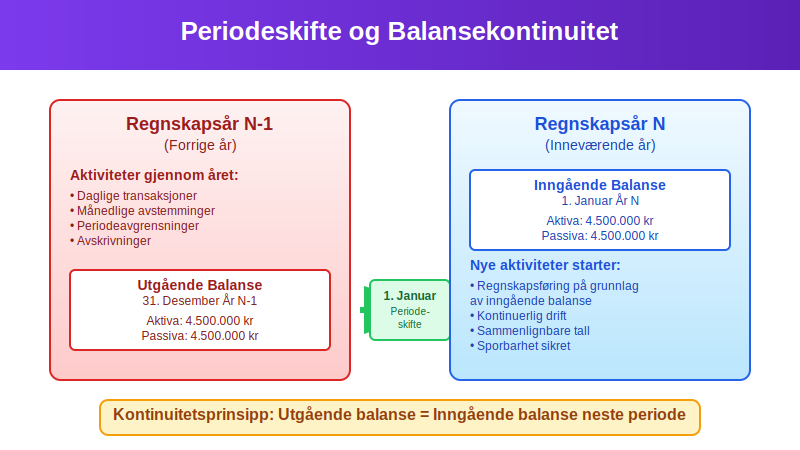
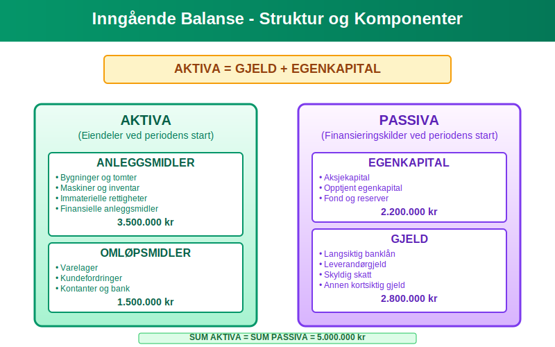
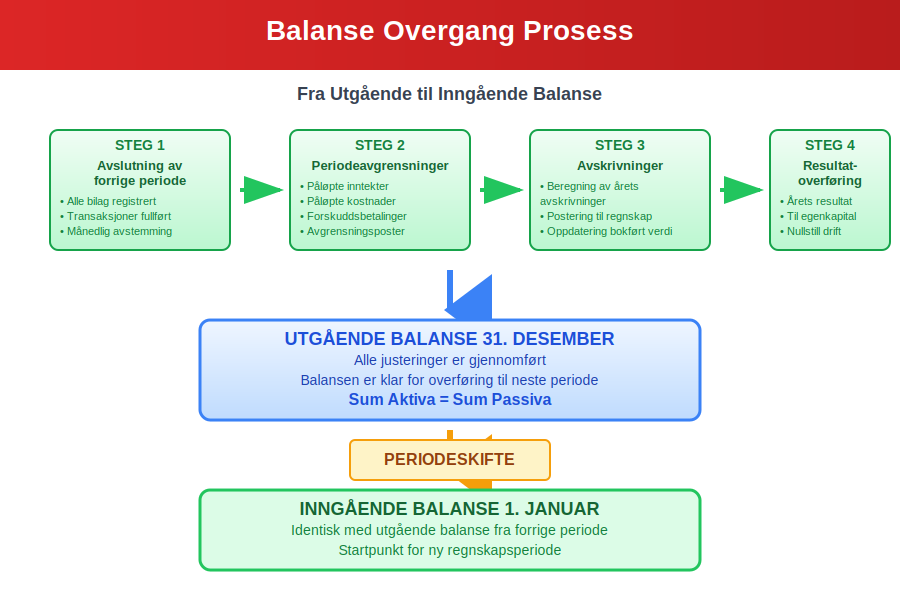
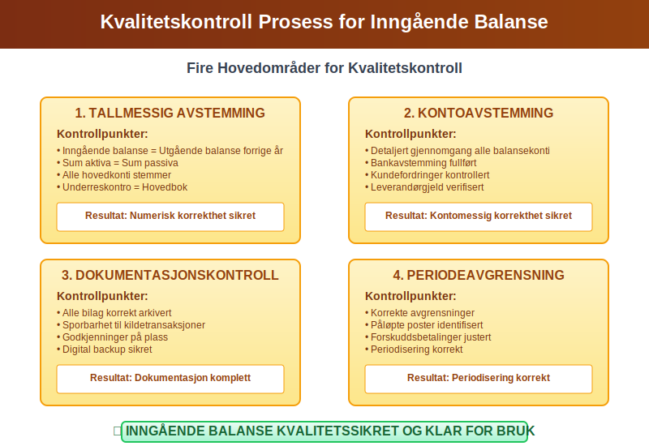
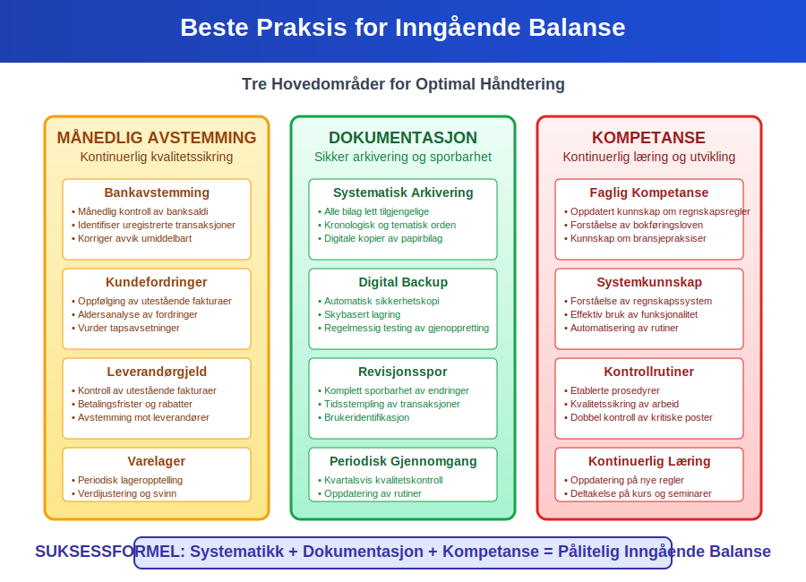

Inngående balanse er et fundamentalt begrep i regnskapsføring som refererer til åpningsbalansen ved begynnelsen av en ny regnskapsperiode. Den representerer virksomhetens økonomiske stilling på det tidspunktet den nye perioden starter, og er identisk med utgående balanse fra forrige periode. Denne artikkelen gir en omfattende gjennomgang av inngående balanse, dens rolle i regnskapsføring og praktiske anvendelse.
Seksjon 1: Definisjon og Grunnleggende Konsept
Inngående balanse er balansen som viser en virksomhets finansielle stilling ved begynnelsen av en regnskapsperiode. Den fungerer som startpunktet for all regnskapsføring i den nye perioden og sikrer kontinuitet mellom regnskapsperioder.

1.1 Forholdet til Utgående Balanse
Den inngående balansen for år N er alltid identisk med utgående balanse for år N-1. Dette prinsippet sikrer:
- Kontinuitet i regnskapsføringen
- Sporbarhet mellom perioder
- Konsistens i finansiell rapportering
- Integritet i regnskapssystemet
1.2 Tidsperspektiv og Periodisering
Inngående balanse markerer overgangen mellom to regnskapsperioder og er kritisk for:
- Etablering av åpningsposter
- Videreføring av eiendeler og gjeld
- Beregning av periodens endringer
- Avstemming og kontroll

Seksjon 2: Komponenter i Inngående Balanse
Den inngående balansen består av samme komponenter som enhver balanse, men representerer startverdiene for den nye perioden.
2.1 Aktiva i Inngående Balanse
Aktiva i inngående balanse omfatter alle eiendeler virksomheten kontrollerer ved periodens start:
Anleggsmidler
- Materielle anleggsmidler: Bygninger, maskiner, inventar med bokført verdi
- Immaterielle eiendeler: Patenter, varemerker, goodwill
- Finansielle anleggsmidler: Langsiktige investeringer og aksjer
For detaljert informasjon om anleggsmidler, se Hva er anleggsmidler?.
Omløpsmidler
- Varelager: Råvarer, halvfabrikata, ferdigvarer
- Fordringer: Kundefordringer, andre fordringer
- **Kontanter og bankinnskudd
2.2 Passiva i Inngående Balanse
Passiva viser hvordan aktivaene er finansiert ved periodens start:
Egenkapital
- Aksjekapital: Innbetalt kapital
- Opptjent egenkapital: Akkumulert overskudd fra tidligere perioder
- Fond og reserver: Spesielle egenkapitalkomponenter
Gjeld
- Langsiktig gjeld: Lån og forpliktelser med løpetid over ett år
- Kortsiktig gjeld: Leverandørgjeld, påløpte kostnader, kortsiktige lån

Seksjon 3: Praktisk Oppbygging og Eksempel
3.1 Eksempel på Inngående Balanse
Her er et praktisk eksempel på hvordan en inngående balanse kan se ut:
| AKTIVA | Inngående Balanse | PASSIVA | Inngående Balanse |
|---|---|---|---|
| ANLEGGSMIDLER | EGENKAPITAL | ||
| Bygninger og tomter | 3.500.000 | Aksjekapital | 1.000.000 |
| Maskiner og inventar | 1.200.000 | Opptjent egenkapital | 2.800.000 |
| Immaterielle rettigheter | 300.000 | Sum egenkapital | 3.800.000 |
| Sum anleggsmidler | 5.000.000 | ||
| GJELD | |||
| OMLØPSMIDLER | Langsiktig banklån | 2.500.000 | |
| Varelager | 800.000 | Leverandørgjeld | 400.000 |
| Kundefordringer | 600.000 | Skyldig skatt | 150.000 |
| Kontanter og bank | 450.000 | Annen kortsiktig gjeld | 200.000 |
| Sum omløpsmidler | 1.850.000 | Sum gjeld | 3.250.000 |
| SUM AKTIVA | 6.850.000 | SUM PASSIVA | 6.850.000 |
3.2 Overgang fra Utgående til Inngående Balanse
Prosessen for å etablere inngående balanse involverer flere kritiske steg:
- Avslutning av forrige periode: Fullføring av alle bilagsposteringer
- Periodeavgrensninger: Justering for påløpte inntekter og kostnader
- Avskrivninger: Beregning og postering av årets avskrivninger
- Resultatoverføring: Overføring av årets resultat til egenkapital

Seksjon 4: Inngående Balanse i Ulike Virksomhetstyper
4.1 Aksjeselskap (AS)
For aksjeselskap er inngående balanse spesielt viktig for:
- Aksjekapitalforvaltning: Sikring av at aksjekapital er korrekt registrert
- Utbyttehåndtering: Beregning av tilgjengelig egenkapital for utbytte
- Soliditetsvurdering: Analyse av egenkapitalandel og finansiell styrke
4.2 Enkeltpersonforetak
For enkeltpersonforetak fokuserer inngående balanse på:
- Eierens kapitalinnskudd: Registrering av eierens investeringer
- Privat bruk: Håndtering av private uttak og innskudd
- Forretnings- vs. privatøkonomi: Klar skille mellom virksomhet og privat
4.3 Nyetablerte Virksomheter
For nyetablerte virksomheter representerer inngående balanse:
- Startkapital: Eierens innledende investering
- Oppstartskostnader: Anskaffelseskostnader for etablering
- Innledende eiendeler: Første innkjøp av anleggsmidler og omløpsmidler
Seksjon 5: Kvalitetskontroll og Avstemming
5.1 Kontrollrutiner for Inngående Balanse
Sikring av korrekt inngående balanse krever systematiske kontrollrutiner:
- Tallmessig avstemming: Kontroll av at inngående balanse = utgående balanse forrige år
- Kontoavstemming: Detaljert gjennomgang av alle balansekonti
- Dokumentasjonskontroll: Sikring av at alle bilag er korrekt arkivert
- Periodeavgrensningskontroll: Verifikasjon av korrekte avgrensninger
5.2 Vanlige Feilkilder og Løsninger
| Feiltype | Årsak | Løsning | Forebygging |
|---|---|---|---|
| Tallmessige avvik | Regnefeil, overføringsfeil | Detaljert avstemming | Dobbel kontroll |
| Konteringsfeill | Feil kontobruk | Gjennomgang av kontoplanen | Opplæring |
| Periodeavgrensning | Manglende avgrensninger | Systematisk gjennomgang | Rutiner |
| Dokumentasjon | Manglende bilag | Komplettering av arkiv | Bilagskontroll |

Seksjon 6: Digitale Systemer og Automatisering
6.1 ERP-systemer og Inngående Balanse
Moderne ERP-systemer automatiserer mange aspekter ved håndtering av inngående balanse:
- Automatisk overføring: Direkte overføring fra utgående til inngående balanse
- Integrasjon: Sammenheng mellom hovedbok og underreskontro
- Kontrollrapporter: Automatiske avstemmingsrapporter
- Revisjonsspor: Komplett sporbarhet av alle endringer
6.2 Skybaserte Regnskapsløsninger
Skybaserte systemer tilbyr ytterligere fordeler:
- Sanntidsoppdatering: Kontinuerlig oppdatering av balanseposter
- Automatisk backup: Sikring av data og kontinuitet
- Tilgangskontroll: Sikker håndtering av sensitive finansielle data
- Integrasjoner: Kobling til banktransaksjoner og andre systemer
Seksjon 7: Regulatoriske Krav og Standarder
7.1 Norske Regnskapsstandarder
Bokføringsloven og regnskapsstandarden stiller spesifikke krav til inngående balanse:
- Dokumentasjonskrav: Alle poster må være dokumentert
- Oppbevaringskrav: Regnskapsdata må oppbevares i minimum 5 år
- Revisjonskrav: Større virksomheter må ha ekstern revisjon
- Rapporteringskrav: Årlig innlevering til Regnskapsregisteret
7.2 Internasjonale Standarder (IFRS)
For virksomheter som følger IFRS, gjelder ytterligere krav:
- Sammenlignbarhet: Konsistent presentasjon mellom perioder
- Transparens: Utfyllende noteopplysninger
- Virkelig verdi: Markedsbasert verdivurdering hvor relevant
- Konsolidering: Spesielle regler for konsernregnskap
Seksjon 8: Praktiske Tips og Beste Praksis
8.1 Månedlig Avstemming
For å sikre korrekt inngående balanse ved årsskiftet, anbefales månedlig avstemming:
- Bankavstemming: Månedlig bankavstemming sikrer korrekte kontantsaldi
- Kundefordringer: Regelmessig oppfølging av debitorsaldi
- Leverandørgjeld: Kontroll av utestående leverandørfakturaer
- Varelager: Periodisk lageropptelling og verdijustering
8.2 Dokumentasjon og Arkivering
God dokumentasjonspraksis er kritisk:
- Systematisk arkivering: Alle bilag må være lett tilgjengelige
- Digital backup: Sikring av elektroniske regnskapsdata
- Revisjonsspor: Komplett sporbarhet av alle transaksjoner
- Periodisk gjennomgang: Regelmessig kvalitetskontroll
8.3 Kompetanse og Opplæring
Sikring av korrekt håndtering krever:
- Faglig kompetanse: Oppdatert kunnskap om regnskapsregler
- Systemkunnskap: Forståelse av regnskapssystemets funksjonalitet
- Kontrollrutiner: Etablerte prosedyrer for kvalitetssikring
- Kontinuerlig læring: Oppdatering på nye regler og praksis

Seksjon 9: Sammenheng med Andre Regnskapsbegreper
9.1 Relasjon til Resultatregnskap
Inngående balanse har direkte sammenheng med resultatregnskapet:
- Årets resultat: Påvirker egenkapitalen i utgående/inngående balanse
- Avskrivninger: Reduserer bokført verdi av anleggsmidler
- Periodeavgrensninger: Sikrer korrekt periodisering av inntekter og kostnader
9.2 Sammenheng med Kontantstrømoppstilling
Inngående balanse er også viktig for kontantstrømanalyse:
- Arbeidskapitalendringer: Beregnes basert på balansendringer
- Investeringsaktivitet: Endringer i anleggsmidler
- Finansieringsaktivitet: Endringer i gjeld og egenkapital
9.3 Betydning for Finansiell Analyse
Inngående balanse danner grunnlag for viktige finansielle nøkkeltall:
- Soliditet: Egenkapital i forhold til totalkapital
- Likviditet: Arbeidskapital og likviditetsgrad
- Rentabilitet: Egenkapitalrentabilitet og totalkapitalrentabilitet
Konklusjon
Inngående balanse er et fundamentalt element i regnskapsføring som sikrer kontinuitet og integritet mellom regnskapsperioder. Den representerer ikke bare et øyeblikksbilde av virksomhetens økonomiske stilling ved periodens start, men fungerer også som grunnlaget for all regnskapsføring i den nye perioden.
Korrekt håndtering av inngående balanse krever:
- Systematisk tilnærming: Etablerte rutiner for overgang mellom perioder
- Kvalitetskontroll: Grundig avstemming og dokumentasjon
- Teknisk kompetanse: Forståelse av regnskapsregler og -systemer
- Kontinuerlig oppfølging: Regelmessig overvåking og justering
Ved å følge beste praksis for inngående balanse sikrer virksomheter ikke bare regelverksetterlevelse, men også grunnlaget for pålitelig finansiell rapportering og beslutningsgrunnlag. Dette er essensielt for både interne styringsformål og eksterne rapporteringskrav.
For virksomheter som ønsker å optimalisere sin regnskapspraksis, er forståelse og korrekt håndtering av inngående balanse en kritisk suksessfaktor som påvirker hele regnskapsåret.